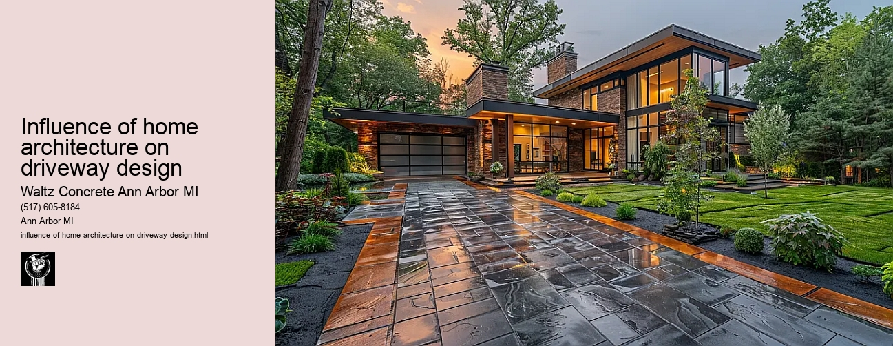

News
Concrete Driveway Installation Ann Arbor Mi
Concrete Driveway Installation Ann Arbor Mi
Choosing the right contractor for installation
Cost of concrete driveway installation in Ann Arbor
Permit requirements for driveway installation in Ann Arbor
The process and timeline of concrete driveway installation
Different types of concrete used in driveways
Maintenance and Repair of Concrete Driveways in Ann Arbor Mi
Maintenance and Repair of Concrete Driveways in Ann Arbor Mi
Preventive maintenance tips for durability
Common causes for concrete driveway damage
Professional companies offering repair services in Ann Arbor
Doityourself versus professional repairs
Costs associated with repairing a concrete driveway
Designs and Styles of Concrete Driveways in Ann Arbor Mi
Designs and Styles of Concrete Driveways in Ann Arbor Mi
Popular design trends for driveways
Considering climate factors when choosing a design or style
Unique customizations available for concrete driveways
Influence of home architecture on driveway design
Stamped stained and decorative options
Environmental Impact of Concrete Driveways in Ann Arbor Mi
Environmental Impact of Concrete Driveways in Ann Arbor Mi
Carbon footprint associated with concrete production
Use of sustainable materials in concrete driveways
Drainage considerations to reduce environmental impact
Local regulations regarding environmentally friendly driveways
Potential use of permeable or porous pavement
Alternatives to Concrete Driveways in Ann Arbor Mi
Alternatives to Concrete Driveways in Ann Arbor Mi
Asphalt driveways and their proscons
Paver stone driveways and their benefitsdrawbacks
Gravel or crushed stone as an alternative option
Comparing costs between different driveway materials
Resinbound surfaces as emerging technology
About Us
Contact Us

Influence of home architecture on driveway design
Influence of home architecture on driveway design
Title: The Influence of Home Architecture on Driveway Design
The architecture of a home and its surrounding spaces significantly impacts the design and layout of driveways. This relationship between home architecture and driveway design is essential to creating a harmonious aesthetic appeal and ensuring functionality. This essay aims to shed light on how different architectural styles influence the design choices for driveways.
A home's exterior, from its facade style, color palette, to its size, often dictates the type of driveway that fits best. For instance, grand colonial-style homes with expansive front yards usually pair well with circular or long straight driveways leading up to the main entrance. In contrast, modern or minimalist houses tend to favor simpler driveway designs such as those featuring clean lines or geometric patterns.
Another factor is the house's overall theme or era it represents. Victorian-style homes often favor intricate brickwork in their driveway designs as an extension of their elaborate aesthetic features. On the other hand, mid-century modern homes might feature a sleek concrete driveway which mirrors their straightforwardness and simplicity.
Scale also plays a crucial role in this process; larger properties can accommodate more complex driveway configurations like horseshoe or dual-entry designs while smaller properties may only have space for a single-car width drive. These considerations ensure that the property maintains visual balance without compromising practicality.
The materials used in constructing driveways should ideally complement those used in building the house too. A rustic styled house would blend seamlessly with a cobblestone or gravel driveway whereas contemporary styled homes might opt for polished concrete or asphalt for coherence.
The shape and slope of your land are equally important when choosing your driveways layout and material choice. Flat landscapes provide greater flexibility than hilly terrains where careful planning is required to avoid issues related to water drainage and vehicle maneuverability.
Lastly, let us not forget about regional influences that result from varying weather conditions across locales. Homes located in areas prone to heavy rainfall might require permeable driveway materials to allow for better water absorption. In contrast, homes in snowier regions might favor heated driveways to prevent ice build-up during winter.
In conclusion, the architecture of your home greatly influences your driveway design - it should not only reflect the style and era of your house but also consider the geography and climate of your location. By aligning these elements harmoniously, homeowners can create an attractive and functional driveway that adds value to their property while enhancing curb appeal.
Designing a driveway is more than just laying down a path for vehicles; it's about creating an inviting entryway that complements your homes architectural features. When done right, it leads to a cohesive design where every element comes together harmoniously, making a statement even before one steps foot into the main dwelling.
Unique customizations available for concrete driveways
Influence of home architecture on driveway design
Frequently Asked Questions
How does the architecture of a home influence the design of a concrete driveway in Ann Arbor, MI?
The architecture of a home significantly influences the design of a concrete driveway. Factors such as the style, size, and layout of the house can dictate the shape, size, and pattern of the driveway. For instance, modern homes may favor geometrically clean lines while traditional homes might opt for more intricate patterns.
What are some common architectural styles in Ann Arbor that may impact concrete driveway designs?
Some common architectural styles in Ann Arbor include Colonial-style houses with symmetrical facades or mid-century modern homes with flat planes and large glass windows. These styles could lead to different driveway designs; for example, Colonial-style houses might pair well with classic rectangular driveways while mid-century modern homes might suit unique curved or asymmetrical driveways.
Are there any local building codes or regulations in Ann Arbor that affect how one can design their concrete driveway?
Yes, local building codes and regulations in Ann Arbor do stipulate certain requirements for constructing driveways such as setback rules from property lines or street intersections. Its important to consult with local authorities or an experienced contractor during your planning process to ensure compliance.
How can homeowners integrate their driveway design with their homes architecture to enhance curb appeal?
Homeowners can consider using similar color palettes between their home exterior and driveway or incorporating repeating patterns seen on their home into their driveway design. Using landscape elements such as lighting fixtures and plants that complement both the house and drive aesthetics is another way to create visual harmony.
Influence of home architecture on driveway design